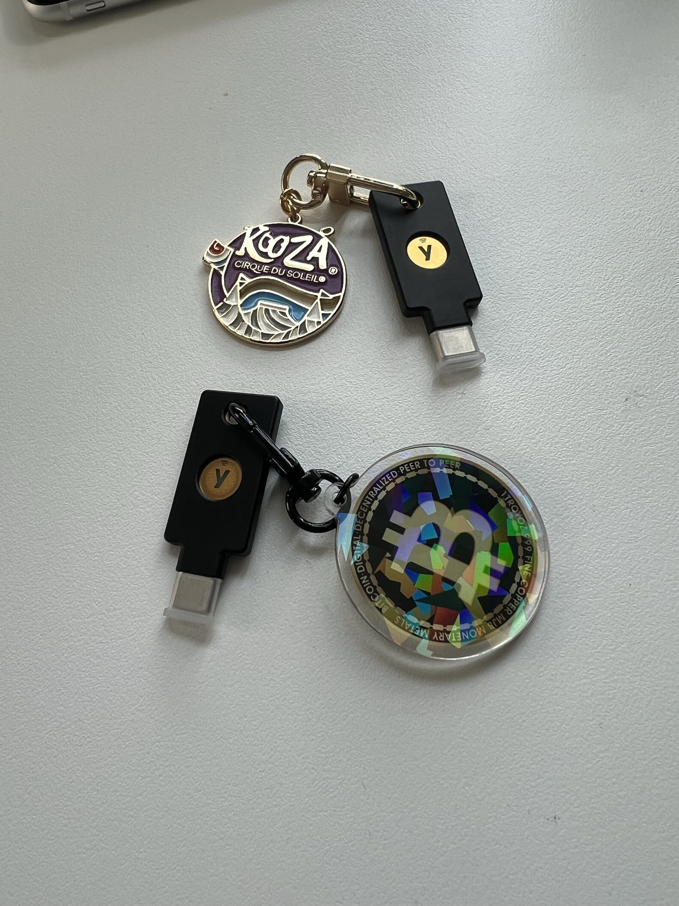

아는 지인 비트코이너의 소개로 물리적 보안키인 유비키(YubiKey)를 구매했다. 최신 NFC 지원 모델로 구매했는데, 덕분에 구형 아이폰에서도 사용 가능하다.
블링블링하게 키링을 달아주는 게 매너.
1. 기능
내 계정을 보호한다. 특정 사이트에 유비키를 등록하면, 그 사이트에 새로운 기기로 로그인할 때마다 이 실물 유비키가 필요하다.
만약 내 주민번호, 연락처, 평소에 쓰는 비밀번호가 모두 털려 중국인의 손에 넘어갔다고 치자. 이제 내 모든 계정은 탈탈 털리는 일만 남았다.
하지만 유비키를 등록했다면? '짱'은 내가 가진 유비키가 없다면 내 계정에 접근할 수 없다. 이게 바로 넘사벽인 이유이다.
"내 비번을 알아도 너는 내 계정에 접근할 수 없다"
는 것이다. 이는 매우 강력한 보안을 선사한다.
실제 엑스(트위터), 구글, 애플(iCloud), 디스코드를 모두 유비키로 잠궈놓았다.
또한, 해외거래소인 바이낸스도 유비키를 지원한다니 해외거래소 이용자는 적극 활용하도록 하자. (거래소를 추천하진 않음)
난 아이폰 한 개에 내 정보를 일절 담지 않은 보안폰을 만들어 사용하는데, 이 애플 계정을 유비키로 한 번 더 잠궈서 쓰며 iCloud 메일을 평소 쓰고 있다.
또한 보안성이 좋기로 유명한 프로톤 메일도 유비키로 잠글 수 있으니, 나 같은 보안게이들은 활용해보길 바란다.
유비키로 잠긴 계정은, 비번을 쳐도 보안키를 요구한다.
2. 보안 등급
보안 등급은 정말 최상급이다. 펜타곤, 미국 육군, 미국 국무부, 영국 정부 등에서 절찬리에 사용하고 있다고 한다.
유비키 제작사인 유비코(Yubico)는 사회적 가치를 위해 2019년 홍콩 민주화 운동 당시 활동가들에게 500개의 YubiKey를 제공한 적이 있다. 이를 통해 그들이 주고받는 이메일이 미 국무부급 수준의 암호로 암호화되어 중국 공산당이 사찰할 수 없게 만들었다.
3. 단점
첫 번째는, 강력하고 우수한 만큼 비싸다는 거. 유비키는 개당 10만 원인데, 분실을 대비해 두 개를 살 것을 권한다. (심지어 애플은 유비키가 두 개여야만 등록이 된다.)
즉 한 방에 20만 원을 써야 한다.
하지만 문제는 없겠지, 우리는 보안덕후다. 그까짓 20만 원....!
두 번째 단점은, 이제 귀찮다는 거. 실제 필자는 누워서 유튜브를 아이패드로 감상하다 감동을 받아 구독·좋아요·댓글을 달고 싶었지만, 구글 로그인을 유비키로 잠가둔 덕분에 "나를 로그인하게 만들다니"의 진입장벽이 올라가 버린 것. 결국 그런 거 없이 그냥 잤다.
이 글을 쓰는 지금까지도 아이패드로 구글 로그인은 안 하고 있음. 으하하.
이상으로 물리적 보안키 YubiKey의 사용기를 마친다.